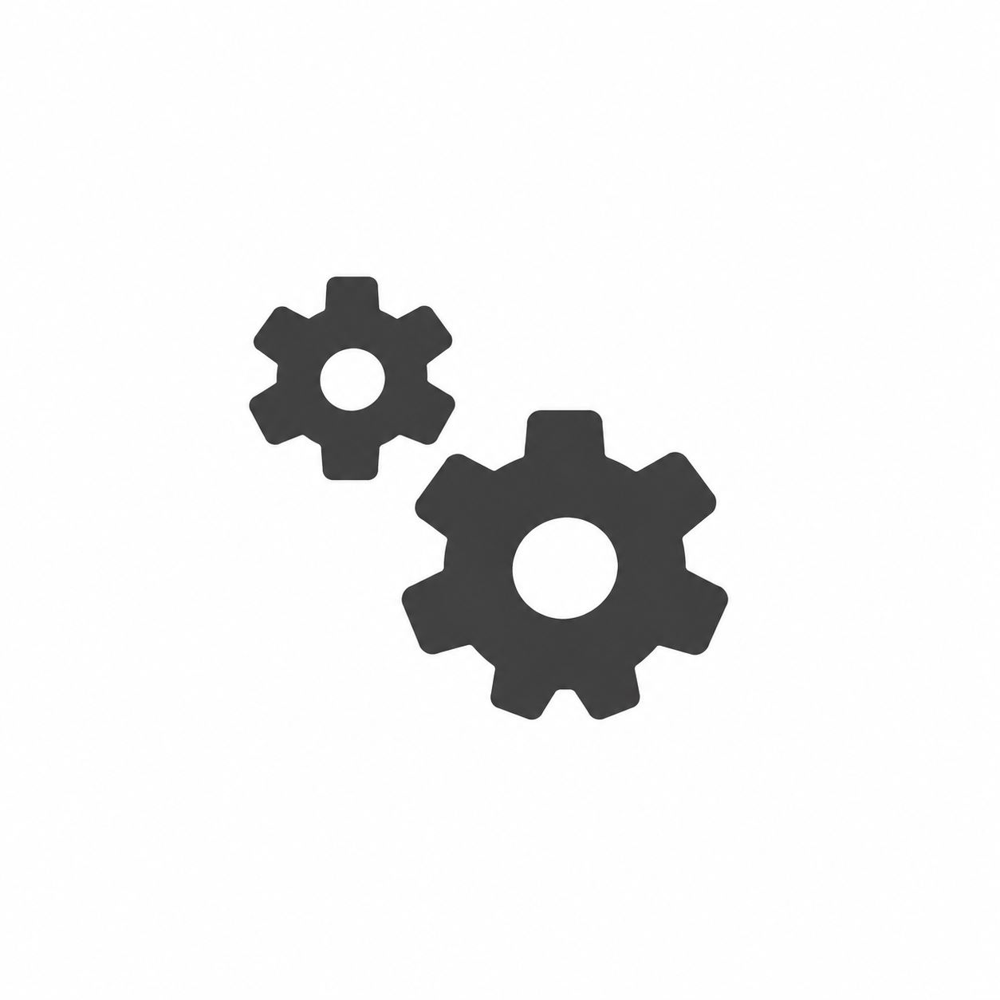

This menu displays parameters relating to the unloading stations.

Parameters
Number | Station number. |
Length | Palletising station length. |
Width | Palletising station width. |
Base number | Number of the base used for that station. |
Container | NPal contained in the station. |
Container type | PalType contained in the station.  |
Minimum pallet depth coordinate | Depth relative to the station origin beyond which the robot cannot travel. |
Minimum crate depth coordinate | Depth relative to the station origin beyond which the robot cannot travel. |
Minimum A-frame depth coordinate | Depth relative to the station origin beyond which the robot cannot travel. |
Preview length | Station length in the “configure station previews” menu. |
Preview width | Station width in the “configure station previews” menu. |
Preview X position | Station X position in the “configure station previews” menu. |
Preview Y position | Station Y position in the “configure station previews” menu. |
Preview rotation | Station rotation in the “configure station previews” menu. |
Locators
Coordinates of the locators used relative to the station base

Preview Options
Pressing the button at the top right displays a menu specifically for the currently selected Preview.

Open preview parameters | |
 | Save preview parameters |
 | Configure preview |